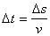
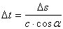
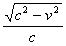
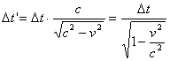

Physics
- Introduction
- What is space?
- What is matter?
- What is velocity?
- Why is the highest speed is the speed of light?
- Why is the speed of light is smaller in matter?
- What is force?
- What is energy?
- What is time?
- Is time travel possible?
- Can we change the past?
- Is the universe random or deterministic?
- When was the universe created and when will it end?
- Does the universe expand forever?
- Do objects exist?
Introduction
Current physics explains well most of known phenomena, yet it lacks answers to the fundamentals questions.
It explains mostly 'how' questions, but less 'why' questions.
Here I will try to answer these questions. The answers are scientific speculations.
The physics chapter includes:
- Basic concepts definitions.
- Deriving part of special relativity theory from the basic concepts.
- Assumptions about the universe.
What is space?
Space is vacuum that has spatial waves that advance only at the
speed of light (c).
The space has several dimensions. The 3 dimensions that we know (x,y,z) and at least 6 closed modulated dimensions that are modulated to
the size that is smaller then proton.
This does not mean that the regular 3 dimensions are not modulated. If they are modulated, they have the size of the universe.
We will use these assumptions for explaining the other concepts.
What is matter?
Matter is a type of spatial wave that is directed to the modulated
dimensions.
When the spatial wave forms electrons, protons and neutrons, it is a
part of a wave group of an object like a chair or a man.
Quantum mechanics claims that matter particle can be found with
different probabilities on several places. Actually the particle is
really scattered on several places, since it is a spatial wave.
A visual example to the unity of matter and space can be found
with La Linea.
What is velocity?
When we move an object in space like a ball with a constant velocity
of v, the ball's speed does not change and the direction does not
change. Yet the molecules of the ball are moving with Brownian
motion and the electrons are circling the atoms with their own
velocity.
The velocity is defined as the 3 dimensional vector component of the
spatial wave vector:

When c is the speed of the spatial wave in hyperspace (speed of light) and is the angle between the spatial wave vector and its 3D vector component.
Why is the speed of light is smaller in matter?
When light travels through matter the speed of light seems to be reduced below c.
Matter is bended space so the light has longer way to go when it travels trough matter. This results with reduced speed of light inside matter.
Why is the highest speed is the speed of light?
According to Einstein's relativity theory you can't pass the speed
of light.
The reason for this outcome is because hyperspace waves run only at
the speed of light, so 3D space movement must be less then or equal
to the speed of light. Imagine a car that drives in a constant speed
c and a constant
direction in an
x-y plain, the
velocity vector has magnitude of
c , but if we
will look at the velocity in the
x
direction (vx), the magnitude of the velocity component must be less then or
equal to c:

What is force?
Force is a spatial wave that bends the direction of another spatial
wave.
Force is defined as the amount of direction bending of a spatial
wave by another spatial wave. When a spatial wave direction is
bended it is accelerated.
What is energy?
Energy is any type of spatial wave that can increase the velocity of matter particles, when interacted.
What is time?
We are used to think about time as an additional fourth dimension to the 3 spatial dimensions.
Here I will introduce a different approach.
Time is defined as a
spatial state or
three dimensional spatial state.
Time change is defined as a
three dimensional spatial state change.
These definitions can be expanded when applied to subsets of hyperspace.
Since all spatial waves advance with the speed of light (
c ), the time
actually can be derived from the velocity and the 3 dimensional
distance that the spatial wave moves.

Since


When a is the angle between the spatial wave direction and v3D.
Time expansion :
When an object is at rest, the Brownian motion has the average
velocity of
vavg
.
Because the spatial wave advance always at the speed of c , when the object is accelerated to 3D velocity of v , the spatial vector is bended and the Brownian motion is decelerated. According to Pythagoras theorem, the remaining velocity vector component is
√(c2 - v2)
The Brownian motion has decreased by a factor of , so the time change (gap) has increased by:

Is time travel possible?
While we read this page, we are traveling through time. When we
speak about time travel, we mean that the time traveler is going
through a process that freezes his own time while the rest of the
universe changes.
A guy is entering into a time machine and goes 10 years to the past.
Then he kills himself and goes back to the future. This scenario is
impossible it does not make sense and violates the causality
principle. Thinking of time as a spatial state may simplify this
discussion.
Here are 2 methods for forward time traveling:
-
Freeze the body and unfreeze after many years (Lets assume we solved the technical problems that caused by expanding of the water / blood when turning to ice).
-
Fly very fast near the speed of light.
Here are 2 methods for backward time traveling:
-
Reverse all spatial waves in the universe (except yourself) or an isolated subset of the universe - the time should go backwards. Doing this of course is impossible. Yet we can wonder if the spatial waves are not already reversed. How can we determine that the time goes forward? Every morning that we think that we wakeup, we actually go to sleep (actually unsleeping, since all biologic process are reversed). We can picture this sort of universe like a backwards-played movie.
-
Wait until the spatial state will be the same as the requested past time (infinitely long time).
Can we change the past?
We can't change the past, but we can try to change the consequences
of the past.
Imagine a ball that is flying in space, its course was changed in
the past, we want to undo the change - we need to change its course
to the original path.
The past can be "changed" by undoing the unwanted results.
This can't be done in 100% change, but can be done roughly.
The change will probably be match harder to do now and will require
much more energy, then doing it in the past.
Is the universe random or deterministic?
When you toss a coin, you can't tell which side the coin will land.
The odds will be close to 50% for each side of the coin. Yet if you
could measure the initial velocity the initial angle the mass and
the shape of the coin, you could get a pretty accurate answer from a
simulation. What has changed? You have now additional information.
The completely random system is now perceived as almost
deterministic system.
The universe is random in every subset of the universe, but
deterministic as a whole.
The universe is random in every subset of the universe, since we
can't isolate a subset of the universe from the rest of it and we
can't predict the external affects on the subset.
This means that the universe is deterministic and not random.
Einstein expressed this idea with the phrase: 'God does not throw
dice'.
Since we can't predict many events, we can refer the universe as random.
When was the universe created and when it will end?
Though it is not said in the bible, many people think that god
created the universe.
Astronomical big bang theory does not help much. The big bang theory
was based on precise astronomical observations that all the galaxies
in the universe are moving away from each other, like two dots on
the surface of an inflating balloon. When applying these finding
with linear estimation, suggests that the universe has started from
one singular point. This means that the universe emerged from
nothingness, first not universe and then universe. This is an
unacceptable explanation, since it contradicts everything that
happened afterwards.
More reasonable explanation is that the universe existed forever in
the past and will exist forever in the future.
This idea is not new, it does not contradict the big bang theory, it
just says that the universe did not started from one singular point.
Does the universe expand forever?
According the Hubble's observations and General relativity, the
universe expands.
Actually the universe expands and shrinks at the same time:
While the universe expands, there is a lot of matter that shrinks
within black holes.
Do objects exist?
What is an object? An object is a spatial waves group with specific properties - like house or ball or light wave. Yet all spatial waves are part of hyperspace, so do objects really exist on their own?
This idea is not new - try reading the heart sutra while replacing the word "vacuum" with "hyperspace".
Air behaves like fluid when
v>speed of voice - equivalence with fluid air
Cold fluid air is equivalent to traveling when
v>speed of voice
TMOL
RAPID TABLES